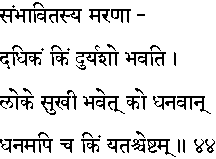
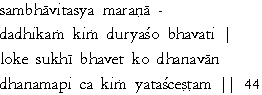

|

|
Verse 44 - Meaning:
Q:What (kim) is more (adhikam) dreadful than death (maranaad) to a person respected by all in his country ? (sambhaavitasya)
A:Anything that causes him disrepute (duryaso bhavati).
Q:In this worldly life (loke) who (ko) is happy (sukhi bhavet) ?
A:The rich man. (dhanavaan)
Q:What (kim) should be considered as riches (dhanam api) ?
A:That which enables one to obtain the objects (yatas-ca) that one desires.(ishtam)
|